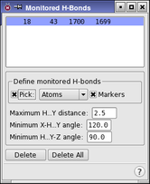

| Using | Features | Links |
This panel is used to set up H-bonds to be monitored during a dynamics simulation. Results are saved in the .mmo file.
To open this panel, click H-Bonds in the Monitor tab of the Dynamics panel or the MC/SD panel.
During a dynamics simulation, the geometry around each monitored H-bond is examined periodically. If the bond meets the three user-specified H-bond criteria, it is counted in the H-bond population survey.
To select H-bonds from the structure in the Workspace, click the four atoms that define the bond and the associated angles and distances. The picking order of the atoms is important. Start with the heavy atom of the donor pair (designated X), followed by the hydrogen atom (designated H), the acceptor (designated Y), and an atom attached to the acceptor (designated Z) to define an angle. For example, in a typical N-H to O=C hydrogen bond, the picking order should be: N, H, O, then C. After the fourth atom has been selected, a new entry appears in list at the top of the panel. The H-bond is marked with solid yellow lines between X and H and between Y and Z, and a dotted yellow line between H and Y. The currently selected H-bond has solid lines on either side of the dotted line.
To specify the criteria for an H-bond, enter a maximum H...Y distance, a minimum X-H...Y angle, and a minimum H...Y-Z angle in the appropriate text boxes. If you do not specify values, the default values are used. The default value for the H...Y distance is 2.5 Å, the minimum X-H...Y angle has a default value of 120°, and the minimum H...Y-Z angle is 90°. If the distance is greater than the maximum or either of the angles is smaller than the minimum, the H-bond is not counted in the current population survey.
To delete an H-bond from the list, select it in the list and click Delete. To delete all monitored H-bonds, click Delete All.

Lists the H-bonds to be monitored. After the fourth atom is picked, a new entry appears in the list.
The Define monitored H-bonds section contains the standard picking controls, which are used to select atoms that define an H-bond. It also contains a Markers option, which you can use to show markers for the monitored H-bonds in the Workspace. The donor pair should be selected first, and then the acceptor pair (e.g. N, H, O, C).
This is the distance between the hydrogen and acceptor atoms. If the distance is larger than the specified value for a given H-bond at the time of sampling, the hydrogen bond will not be counted in that particular population sampling. The default value for this distance is 2.5 Å.
This is the minimum acceptable X-H...Y (e.g. N-H..O) angle. If this angle in a monitored H-bond is less than the value entered in this text box at the time of sampling, the H-bond is not counted at that particular population sampling. The default value is 120°.
This is the minimum H...Y-Z (e.g. H..O=C) angle. If this angle in a monitored H-bond is less than the value entered in this text box at the time of sampling, the H-bond is not counted at that particular population sampling. The default value is 90°.
To delete a monitored H-bond, select it in the Monitored H-Bonds List, then click Delete.
Click this button to delete all monitored H-bonds.